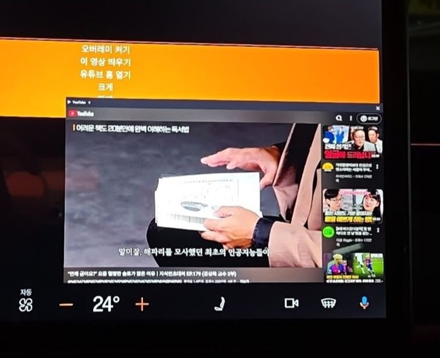
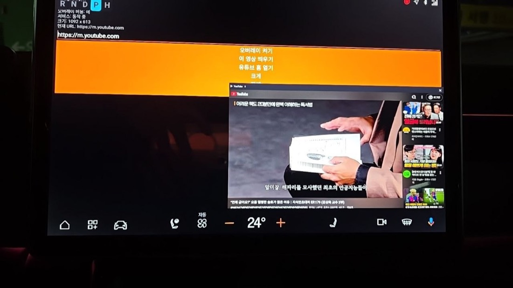
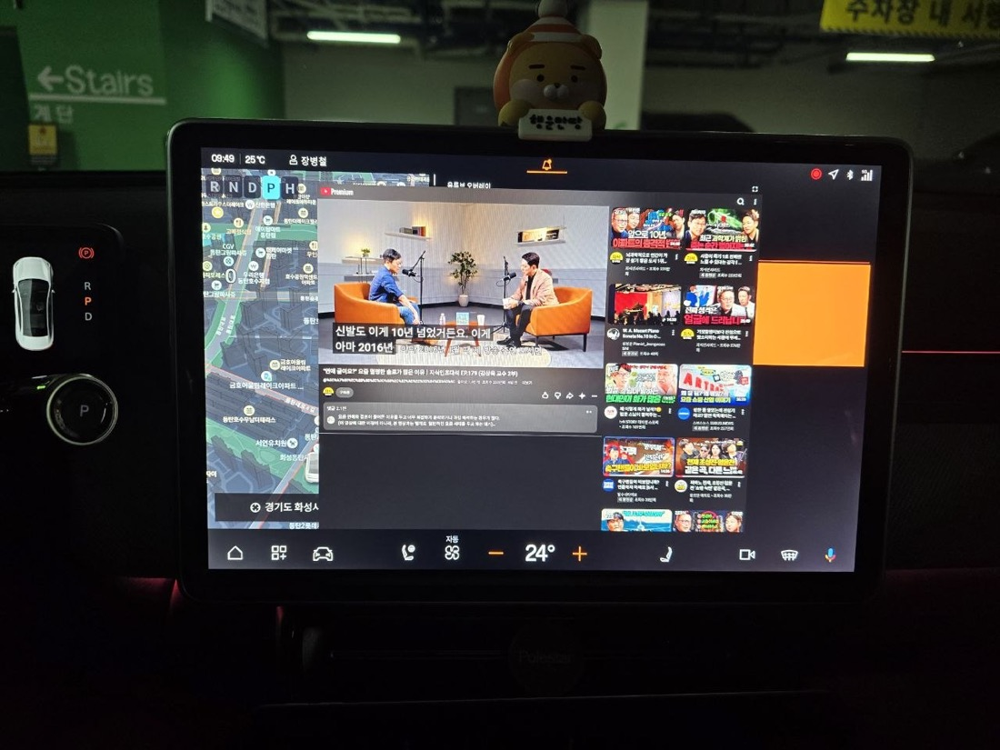
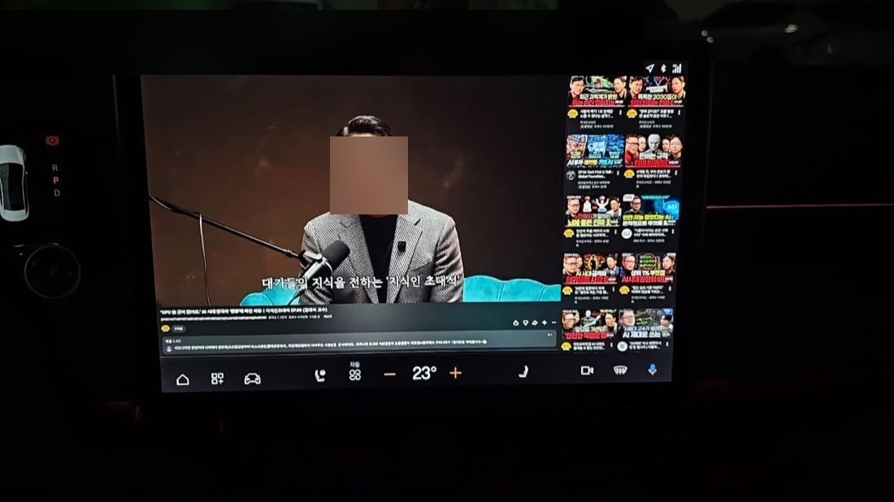
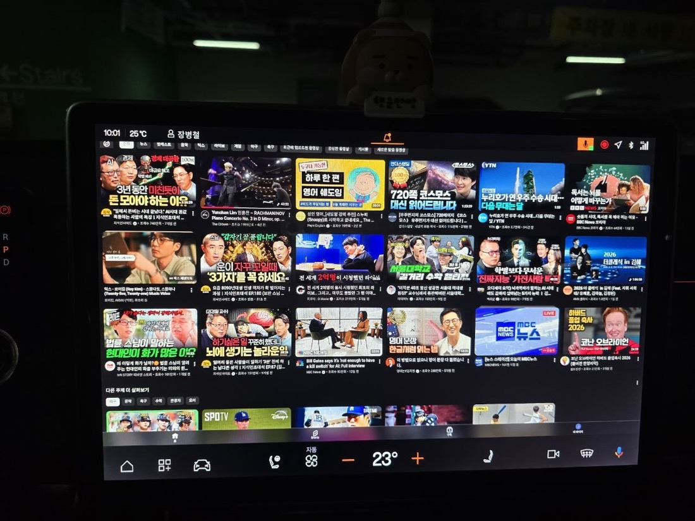

📺 유튜브 오버레이
차 화면 위에 떠 있는 유튜브 창을 띄웁니다. 주행/대기 중 영상을 볼 수 있습니다.
이 앱은?
차 기본 유튜브 앱은 화면을 다 차지해 내비게이션과 함께 보기 어렵습니다. 이 앱은 유튜브를 작은 창으로 띄워 내비 위에 겹쳐 볼 수 있게 해줍니다.
주요 기능
- 유튜브 링크/영상ID 입력 → embed 재생, m.youtube.com 홈 브라우징
- 이동(헤더 드래그) · 크기조절(핀치/◢) · 전체화면 토글(이전 크기로 정확 복귀)
- 창 위치 ▼▲ / 전체화면 여백 ↓↑ 버튼
사용법
- 앱 실행 → 오버레이 켜기
- 주소창에 유튜브 주소/ID 입력 → 재생
- ⛶ 로 전체화면, 다시 ⛶ 로 원래 크기
한계
- 차 기본 앱(네이티브) UI는 오버레이에 못 넣습니다 → 유튜브 웹버전으로 구현
- 구글 로그인 · DRM 영상은 차단, 일부 영상은 임베드 제한
기술 포인트
- 오버레이 WebView: JS + DOM 저장소 + 자동재생
MATCH_PARENT창은lp.y를 무시 → 전체화면 여백은 창 안쪽 topMargin으로 조절
스크린샷





💬 댓글